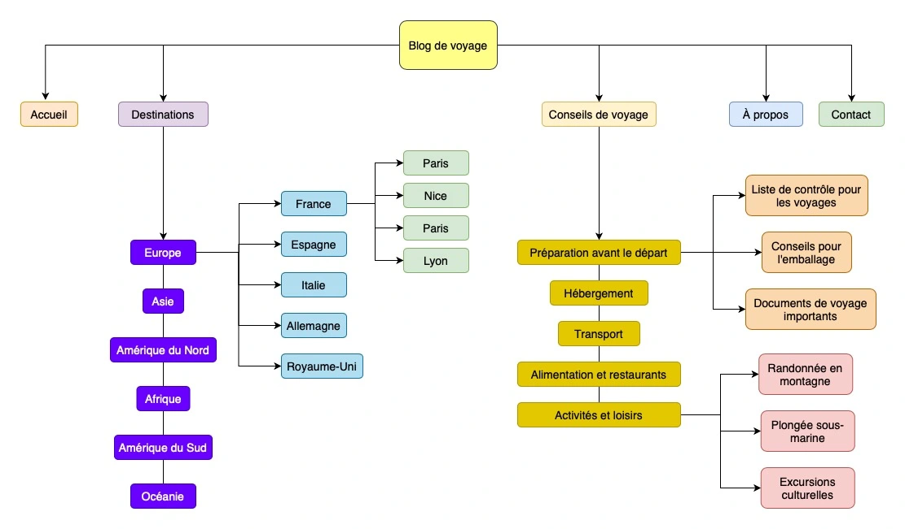

Une arborescence de site web, également appelée structure de site, est l'organisation hiérarchique et logique du contenu d'un site web.
Elle représente la manière dont les différentes pages et sections du site sont interconnectées.
Une bonne arborescence de site web est essentielle pour offrir aux visiteurs une expérience utilisateur agréable, faciliter la navigation et améliorer le référencement sur les moteurs de recherche.
Voici quelques éléments importants pour comprendre les arborescences de site web :
L'arborescence est organisée en niveaux. Le niveau 1 contient généralement les sections principales du site, comme "Accueil", "À propos", "Services", "Produits", etc. Chaque niveau peut comporter des sous-niveaux, par exemple, dans la section "Produits", vous pourriez avoir des sous-sections pour différents types de produits.
Les niveaux dans l'arborescence de site web représentent les différents degrés de profondeur dans la hiérarchie du contenu du site. Chaque niveau représente un degré de subdivision ou de catégorisation du contenu, permettant ainsi de mieux organiser les informations et de faciliter la navigation pour les utilisateurs. Voici une explication plus détaillée des niveaux :
- Niveau 1 (Racine): Le niveau 1 est le niveau le plus élevé de l'arborescence, et il comprend généralement les sections principales du site. Ces sections représentent les domaines ou les thèmes principaux du site. Par exemple, sur le site d'une boutique en ligne, le niveau 1 pourrait contenir les sections "Accueil", "Produits", "Services", "À propos", "Contact", etc. Chacune de ces sections représente une branche principale de l'arborescence.
- Niveau 2 (Sous-sections): Le niveau 2 est constitué des sous-sections qui sont liées aux sections principales du niveau 1. Ces sous-sections sont plus spécifiques et aident à organiser davantage le contenu du site. Dans l'exemple de la boutique en ligne, sous la section "Produits", vous pourriez avoir des sous-sections telles que "Vêtements", "Électronique", "Accessoires", etc.
- Niveau 3 (Pages individuelles): Le niveau 3 est le niveau le plus bas de l'arborescence, et il comprend les pages individuelles du site. Ces pages spécifiques sont liées aux sous-sections du niveau 2. Reprenons l'exemple de la boutique en ligne : sous la sous-section "Vêtements", vous pourriez avoir des pages individuelles pour "T-shirts", "Pantalons", "Robes", etc.
L'arborescence de site web peut également comporter plus de niveaux, en fonction de la complexité et de la taille du site. Cependant, il est essentiel de garder l'arborescence aussi simple et claire que possible pour que les visiteurs puissent naviguer facilement à travers le site. Plus l'arborescence est profonde, plus les visiteurs peuvent se perdre et se sentir désorientés.
Il est important de noter que la création d'une arborescence efficace nécessite une compréhension approfondie du contenu du site et des besoins des utilisateurs. Une analyse préalable des pages et du contenu prévu est essentielle pour déterminer la meilleure structure hiérarchique qui répond aux objectifs du site tout en offrant une expérience utilisateur agréable.
Chaque page du site a une URL unique qui reflète son emplacement dans l'arborescence. Les URL claires et compréhensibles aident à la fois les visiteurs et les moteurs de recherche à comprendre le contenu de la page.
L'arborescence influe sur la manière dont la navigation est organisée sur le site. Un menu de navigation bien structuré est généralement utilisé pour aider les utilisateurs à se déplacer facilement entre les différentes sections du site.
Une arborescence bien organisée peut améliorer le référencement naturel du site. Les moteurs de recherche préfèrent les sites avec une structure claire, car cela facilite l'indexation et l'exploration des pages.
Avant de créer l'arborescence, il est important de planifier le contenu du site. Définissez les principales sections et catégories, ainsi que les pages spécifiques que vous souhaitez inclure.
Une bonne arborescence facilite la navigation pour les visiteurs. Ils peuvent rapidement trouver ce qu'ils cherchent sans se perdre dans une multitude de pages.
Voici un exemple simple d'arborescence pour un site web de blog de voyage :
Niveau 1 (Racine)
- Accueil
- Destinations
- Conseils de voyage
- À propos
- Contact
Niveau 2 (Sous-sections)
- Destinations
- Europe
- Asie
- Amérique du Nord
- Amérique du Sud
- Afrique
- Océanie
- Conseils de voyage
- Préparation avant le départ
- Hébergement
- Transport
- Alimentation et restaurants
- Activités et loisirs
Niveau 3 (Pages individuelles)
- Destination
- Europe
- France
- Espagne
- Italie
- Allemagne
- Royaume-Uni
- Conseils de voyage
- Préparation avant le départ
- Liste de contrôle pour les voyages
- Conseils pour l'emballage
- Documents de voyage importants
- Destination
- Europe
- France
- Paris
- Nice
- Lyon
- Marseille
- Espagne
- Italie
- Allemagne
- Royaume-Uni
- Conseils de voyage
- Activités et loisirs
- Randonnée en montagne
- Plongée sous-marine
- Excursions culturelles
Dans cet exemple:
Avec cette arborescence, les utilisateurs peuvent facilement naviguer entre les différentes sections du site et trouver des informations spécifiques sur les destinations qu'ils souhaitent explorer ou les conseils de voyage qui les intéressent.
Les URL des pages reflètent également l'organisation hiérarchique, ce qui permet aux visiteurs et aux moteurs de recherche de comprendre la structure du site.